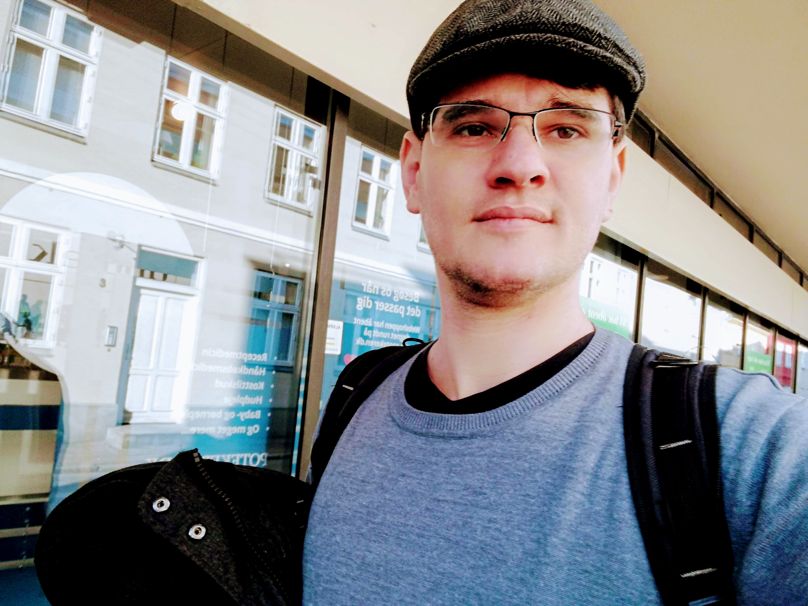

Sergio Luiz Aguirre
Hi, my name is Sergio.
I studied Acoustical Engineering in Santa Maria, Brazil. In my Master's studies, I specialised in the assessment of sound localisation using an implementation of virtual sound sources.
Now I am a PhD student at the Institute of Hearing Research, Scottish Section, at the University of Nottingham.
I am part of the H2020 EC Marie-Curie ITN project 'Innovative Hearing Aid Research – Ecological Conditions and Outcome Measures' (HEAR-ECO), a collaboration between Eriksholm Research Centre, VUmc Amsterdam, and the University of Nottingham.
HEAR-ECO will assess how task demands, motivation, and invested effort modulate speech understanding and hearing-aid benefit in daily life. The team of six PhDs students will work together to creatively combine three established measures of listening effort and to develop innovative conditions for testing hearing aids.
The main objective for my part of this project is to work and develop realistic communication scenarios and estimate the effort benefit of hearing aids using physiological measures to evaluate novel hearing-aid technologies.
My primary supervisors are Dr William Whitmer in Glasgow and Prof. Thomas Lunner here at Eriksholm.
A fun fact about me: Before my engineering studies, I was a professional radio DJ, and my favourite sport is running.
Location
Hearing Sciences – Scottish Section is a satellite of the University of Nottingham based in Glasgow
More fun here
↔